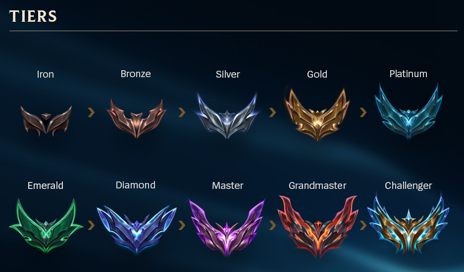
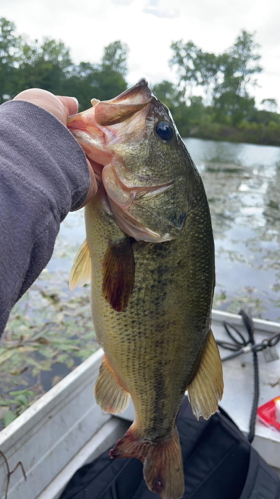

A blog about me
League of Legends is a MOBA game that came out in 2009 and is now one of the most popular and played MOBA games in the world. I started playing League of Legends during season 3, currently it's on season 13. So I guess you can say that I've been playing League for a long time now considering that I've been playing for 10 seasons. When I first started playing the game it was fun, I was addicted it was one of those games where I could play with my friends and enjoy playing. The stress and madness came when I decided to take the game more seriously and wanted to be good at the game. This means that I played a lot of ranked to try to the climb the ladder. I started out as Bronze (which was the lowest tier at the time) due to my lack of knowledge of the game but then as I played more I got better and was able to climb the ranks. As I played more and more and put more hours into the game I was able to surpass Bronze, Silver, and Gold. I was stuck in Platinum for a few seasons and my goal was to reach Diamond at least one time in my career. It was finally during season 8 where I accomplished my goal and reached Diamond, you could say I was ecstatic about my accomplishment. So where am I at now? Well that was 5 seasons ago and ever since then I just haven't felt like trying to reach Diamond again. I just play for fun now so it's less stressful on my mental and so I can still enjoy the game!

Below is a table of some of my ranks that I have accomplished as I played League, you can also see the percentages of players in that rank during that time.
| Season 6: | Season 7: | Season 8: | Season 13: |
|---|---|---|---|
| Platinum | Platinum | Diamond | Emerald |
| Platinum 3 | Platinum 3 | Diamond 5 | Emerald 4 |
| 1.51% | 2.11% | 1.67% | 6.0% |
It all started during this summer where I became addicted to fishing, bass fishing to be exact. I don't know what happen to me because before I hated to fish because I was super impatient when the fish wouldn't bite but ever since I started fishing again during this summer I just became addicted. I use to fish when I was younger but as time went on I just stopped fishing. Ever since I started fishing again I have invested a lot of money into fishing gear, this includes tackle, rod, and reel. As much as I hate fishing when the fish aren't biting, I just love the feeling of having a fish on and being able to catch fish. However, the goal for me just isn't to catch fish I want to catch a big bass, however I live in Michigan so the bass here don't get as big as they do in the South but I know that out there somewhere there are some giants for me to catch. Currently my personal best is 3.5 pounds and I hope to one day break this, with the cold temperatures here already and the fish being harder to catch it looks like I am going to have to wait till next year to finally land that 5 pounder that I am dreaming of.

This is my PB currently, this bass was 3.5 lbs.